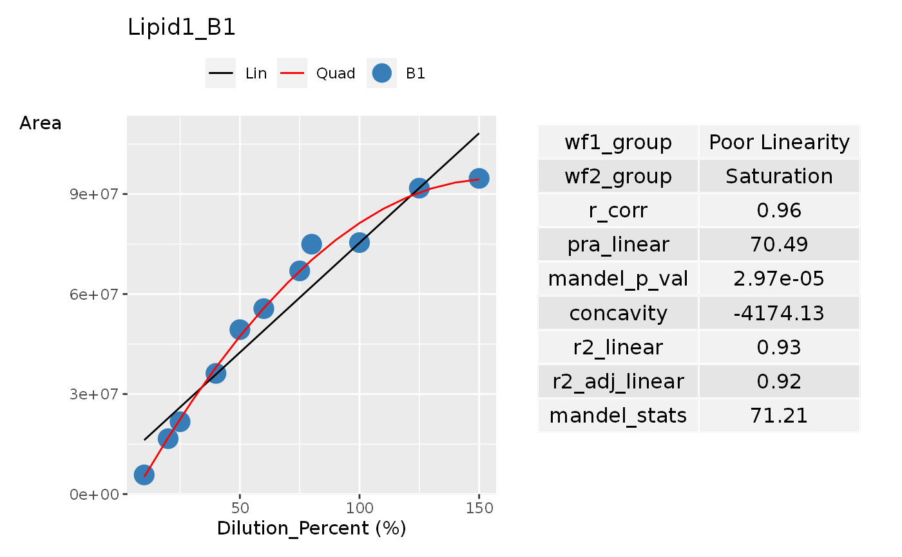
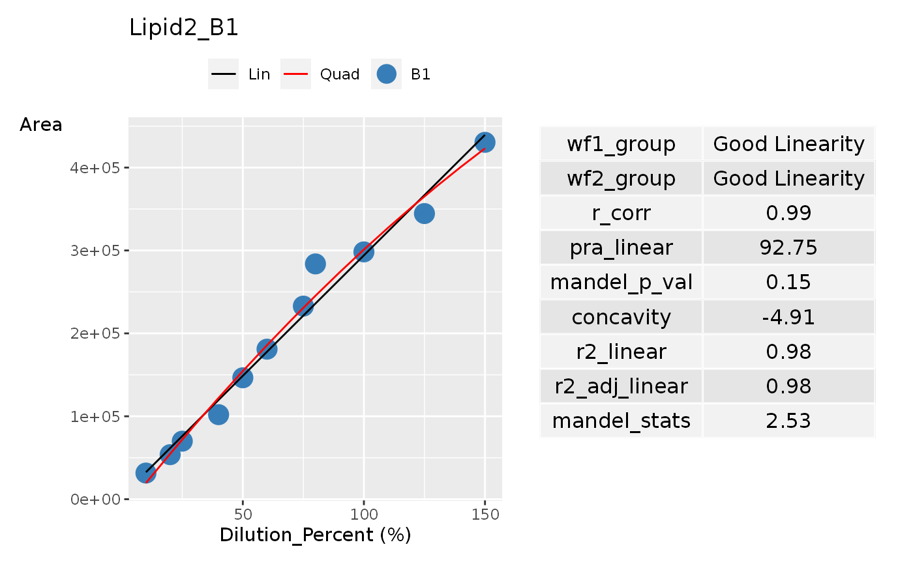
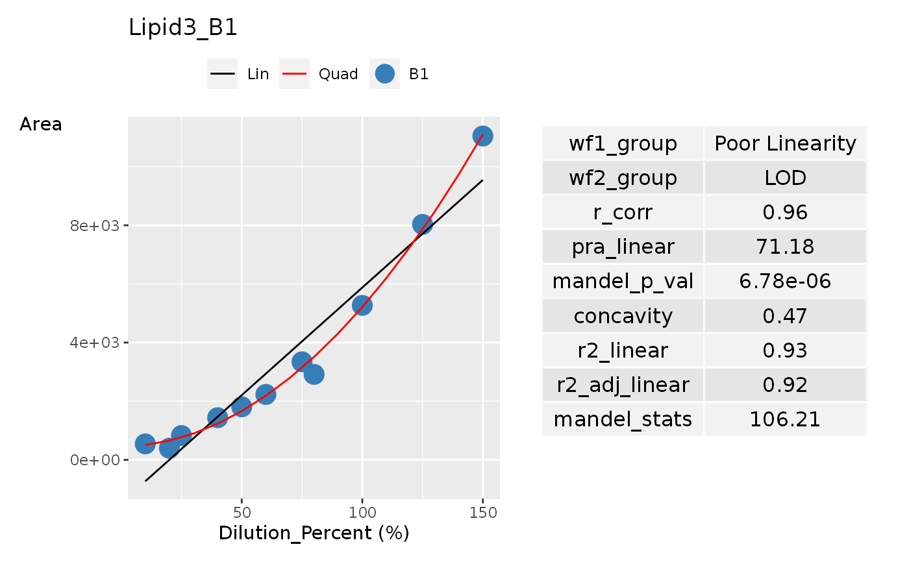

Create a column which contains a list of ggplot
suited for a pdf report
add_ggplot_panel(
dilution_table,
dilution_summary = NULL,
grouping_variable = c("Transition_Name", "Dilution_Batch_Name"),
dil_batch_var = "Dilution_Batch_Name",
dil_batch_col = c("#377eb8", "#4daf4a", "#9C27B0", "#BCAAA4", "#FF8A65", "#EFBBCF"),
conc_var = "Dilution_Percent",
conc_var_units = "%",
conc_var_interval = 50,
signal_var = "Area",
have_plot_title = TRUE,
plot_summary_table = TRUE,
plot_first_half_lin_reg = FALSE,
plot_last_half_lin_reg = FALSE
)Output given from
the function create_dilution_table()
It is in long table format with columns indicating at least the
lipid/transition name, the concentration and signal. Other columns may be
present if it is used to group the dilution curve together
The summary table generated
by function summarise_dilution_table() and/or
evaluate_linearity() but it can also be any generic
data frame or tibble.
If there is no input given in this, the program will create one using
the function summarise_dilution_table() and evaluate_linearity()
with grouping_variable, conc_var and signal_var as inputs
Default: NULL
A character vector of
column names in dilution_tableto indicate how each dilution curve
should be grouped by,
Default: c("Transition_Name", "Dilution_Batch_Name")
Column name in dilution_table
to indicate the group name of each dilution batch,
used to colour the points in the dilution plot
Default: 'Dilution_Batch_Name'
A vector of colours to be used for the dilution
batch group named given in dil_batch_var,
Default: c("#377eb8", "#4daf4a", "#9C27B0", "#BCAAA4", "#FF8A65", "#EFBBCF")
Column name in dilution_table to indicate concentration
Default: 'Dilution_Percent'
Unit of measure for conc_var, Default: '%'
Distance between two tick labels in the dilution plot, Default: 50
Column name in dilution_table to indicate signal
Default: 'Area'
Indicate if you want to have a plot title in
the ggplot plot.
Default: TRUE
Indicate if you want to plot the summary table
in the ggplot plot.
Default: TRUE
Decide if we plot an extra regression line
that best fits the first half of conc_var dilution points.
Default: FALSE
Decide if we plot an extra regression line
that best fits the last half of conc_var dilution points.
Default: FALSE
A table with columns from grouping variable
and a new column panel created containing a ggplot dilution plot
in each row. This column is used to create the plot figure in the
pdf report.
# Data Creation
dilution_percent <- c(
10, 20, 25, 40, 50, 60,
75, 80, 100, 125, 150,
10, 25, 40, 50, 60,
75, 80, 100, 125, 150
)
dilution_batch_name <- c(
"B1", "B1", "B1", "B1", "B1",
"B1", "B1", "B1", "B1", "B1", "B1",
"B2", "B2", "B2", "B2", "B2",
"B2", "B2", "B2", "B2", "B2"
)
sample_name <- c(
"Sample_010a", "Sample_020a",
"Sample_025a", "Sample_040a", "Sample_050a",
"Sample_060a", "Sample_075a", "Sample_080a",
"Sample_100a", "Sample_125a", "Sample_150a",
"Sample_010b", "Sample_025b",
"Sample_040b", "Sample_050b", "Sample_060b",
"Sample_075b", "Sample_080b", "Sample_100b",
"Sample_125b", "Sample_150b"
)
lipid1_area_saturated <- c(
5748124, 16616414, 21702718, 36191617,
49324541, 55618266, 66947588, 74964771,
75438063, 91770737, 94692060,
5192648, 16594991, 32507833, 46499896,
55388856, 62505210, 62778078, 72158161,
78044338, 86158414
)
lipid2_area_linear <- c(
31538, 53709, 69990, 101977, 146436, 180960,
232881, 283780, 298289, 344519, 430432,
25463, 63387, 90624, 131274, 138069,
205353, 202407, 260205, 292257, 367924
)
lipid3_area_lod <- c(
544, 397, 829, 1437, 1808, 2231,
3343, 2915, 5268, 8031, 11045,
500, 903, 1267, 2031, 2100,
3563, 4500, 5300, 8500, 10430
)
lipid4_area_nonlinear <- c(
380519, 485372, 478770, 474467, 531640, 576301,
501068, 550201, 515110, 499543, 474745,
197417, 322846, 478398, 423174, 418577,
426089, 413292, 450190, 415309, 457618
)
dilution_annot <- tibble::tibble(
Sample_Name = sample_name,
Dilution_Batch_Name = dilution_batch_name,
Dilution_Percent = dilution_percent
)
lipid_data <- tibble::tibble(
Sample_Name = sample_name,
Lipid1 = lipid1_area_saturated,
Lipid2 = lipid2_area_linear,
Lipid3 = lipid3_area_lod,
Lipid4 = lipid4_area_nonlinear
)
# Create dilution table
dilution_table <- create_dilution_table(dilution_annot, lipid_data,
common_column = "Sample_Name",
signal_var = "Area",
column_group = "Transition_Name"
)
# Create dilution table and dilution statistical summary
dilution_summary <- dilution_table %>%
summarise_dilution_table(
grouping_variable = c(
"Transition_Name",
"Dilution_Batch_Name"
),
conc_var = "Dilution_Percent",
signal_var = "Area"
) %>%
dplyr::arrange(.data$Transition_Name) %>%
evaluate_linearity(grouping_variable = c(
"Transition_Name",
"Dilution_Batch_Name"
))
# Create a ggplot table
ggplot_table <- add_ggplot_panel(dilution_table,
dilution_summary = dilution_summary
)
ggplot_list <- ggplot_table$panel
ggplot_list[[1]]

ggplot_list[[2]]

ggplot_list[[3]]
